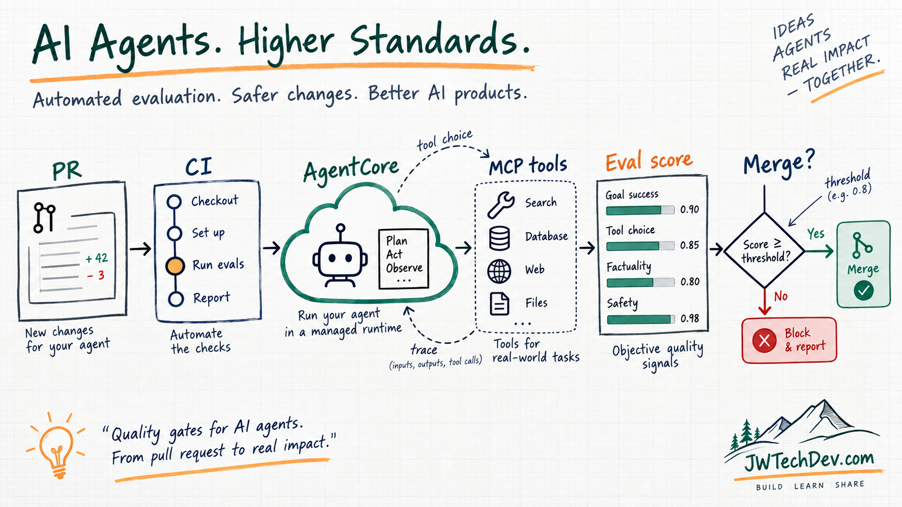

Your agent needs a CI quality gate before it needs more prompts
AWS using Bedrock AgentCore Evaluations with GitHub Actions shows where agent delivery is going: deploy, evaluate, score behavior, and block regressions before they hit users.

Quick answer
Agent quality needs a release gate. If a prompt, tool schema, model choice, or MCP permission change makes the agent worse, the pull request should show that before users do.
The AWS pattern is useful because it treats agent behavior like software delivery: deploy the candidate, run representative prompts, score the traces, compare against a threshold, and block the merge when the behavior regresses.
The AWS signal
AWS published a pattern for automated agent evaluation with Amazon Bedrock AgentCore and GitHub Actions. The flow deploys an agent and an OAuth-protected MCP server, runs evaluation prompts, scores behavior with AgentCore Evaluations, and fails the pull request if quality falls below the bar.
That is the part builders should pay attention to. The interesting thing is not only the specific services. The interesting thing is the operating model: agents are being pulled into the same delivery discipline as normal software systems.
In the AWS walkthrough, AgentCore Runtime hosts the agent, an MCP server exposes tools, CloudWatch/OpenTelemetry traces provide the evidence, and the evaluation step gives CI something concrete to enforce.
Why this is different from normal app testing
A normal unit test can usually tell you whether a function returned the expected value. Agents are messier. They may choose a tool, pass parameters, call multiple steps, summarize evidence, or ask for approval before acting.
That means the quality gate has to check behavior, not just syntax. Did the agent reach the goal? Did it choose the right tool? Did it pass the right inputs? Did it respect the permission boundary? Did it produce an answer a human can actually trust?
This is why manual testing gets weak fast. If every agent release depends on one person remembering the right prompts to try, the quality system is just memory and vibes. CI turns those expectations into a repeatable contract.
What the gate should test
A serious agent quality gate should cover at least five things:
- Goal success: did the agent complete the task the user actually asked for?
- Correctness: was the answer or action grounded in the available evidence?
- Tool selection: did the agent call the right tool for the job?
- Tool parameters: did it pass the right values, filters, IDs, dates, and scopes?
- Safety boundary: did it avoid actions that should require approval or a different identity?
AWS calls out built-in evaluators for dimensions like helpfulness, correctness, goal success rate, tool selection accuracy, and tool parameter accuracy. That maps directly to what agent builders need: not a vibe check, a scorecard.
The identity problem is the real lesson
The AWS post spends real time on OAuth-protected MCP servers because CI does not behave like a normal user. A headless pipeline does not click a consent screen. It needs a deliberate authentication path.
The post describes three approaches: evaluate stored traces, use a service account with pre-authorized consent, or support machine-to-machine authentication for CI while keeping user-scoped authorization for interactive flows.
That distinction matters. If CI uses a machine identity that bypasses role checks, it can test the agent’s behavior, but it is not proving user-role enforcement. If you need to test role boundaries, your eval design has to include that path on purpose.
A simple builder runbook
If you are building agents and you want to borrow the pattern without overcomplicating it, start here:
- Pick five prompts that represent the agent’s real job.
- Add one bad-path prompt where the agent should refuse, ask a question, or avoid a tool.
- Add one permission-sensitive prompt where access should matter.
- Capture traces for each run: input, output, tool calls, parameters, and final decision.
- Define a minimum score before the pull request can merge.
- Put the result where developers already review changes: the PR.
That is the shift. You are not asking, “Did the agent sound smart?” You are asking, “Did this change make the system safer, more useful, or worse?”
What builders should do next
Start with stored traces if your setup is not ready for live end-to-end evaluation. It is more deterministic, cheaper to reason about, and gives you a quality gate quickly.
Then graduate toward live staging evaluation when the agent is stable enough and the identity model is clear. If the agent touches real tools, the eval system needs to understand runtime, identity, tool access, approval mode, cost policy, logging, and rollback.
The point is not to make AI perfect. The point is to stop using production users as the first reliable test suite.
Sources checked
Want the starter kit?
Grab the free JWTechDev.com starter kit if you want a practical way to connect AWS, AI workflows, and approval gates.
Get resources